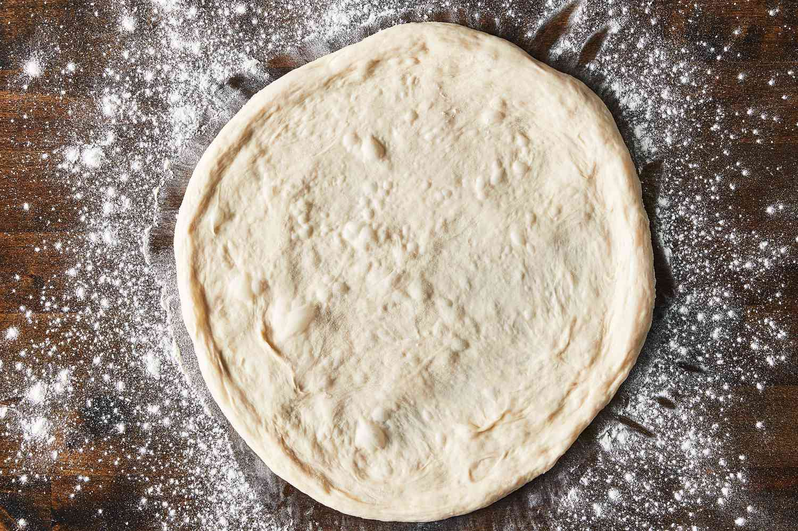

Pizza Dough

Description
This simple brick-oven pizza recipe has been made famous by
well-known, Brooklyn wood-fire pizzerias. Best accompanied by ice-cold, coca cola.
Ingredients
- ¼ cup warm water
- 1 teaspoon active dry yeast
- 1 cup cold water
- 1 teaspoon salt
- 3 cups bread flour
- 1 tablespoon extra-virgin olive oil
Steps
- Make the dough: Pour warm water into a large bowl,
then sprinkle yeast over the top. Let stand for 5 minutes. Stir in cold water and salt. Stir in flour,
1 cup at a time until incorporated.
- Knead dough on a floured surface until smooth, about 10 minutes.
- Divide in half and form into two tight dough balls
Coat with olive oil and refrigerate in a sealed container for at least 16 hours
Be sure to use a big enough container to allow dough to rise.
- Make the pizzas: Remove dough from the refrigerator one hour prior to using.
- Preheat the oven, with a pizza stone on the lowest rack, to 550 degrees F (288 degrees C)
Lightly dust a pizza peel with flour.